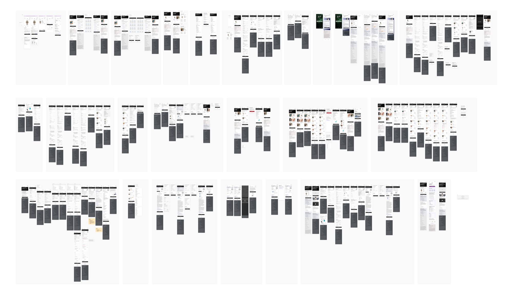
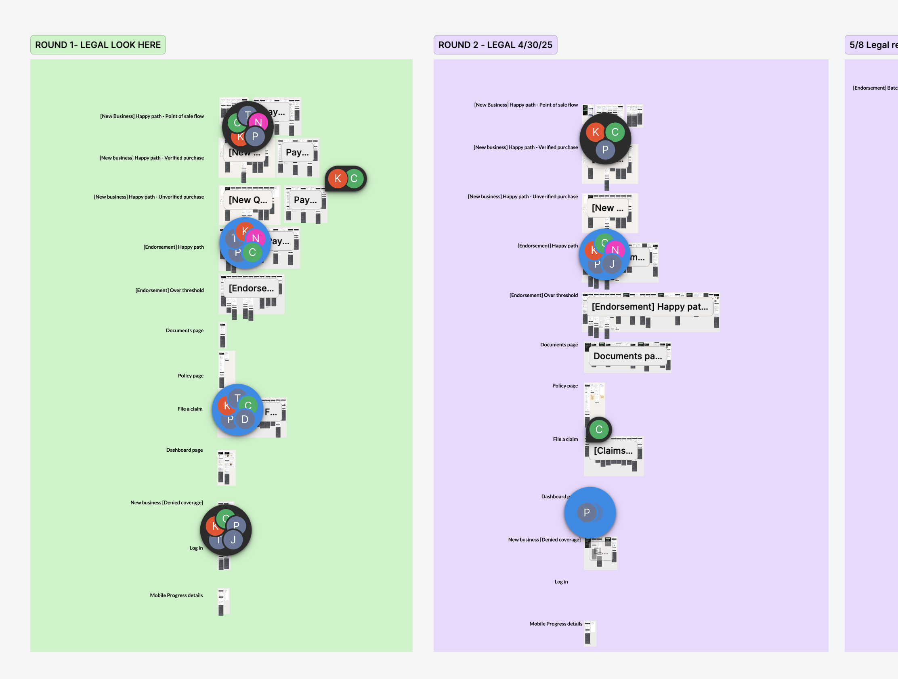
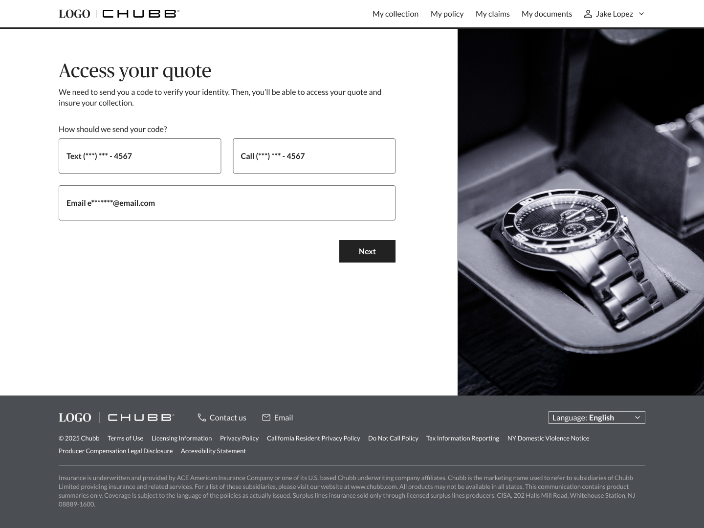
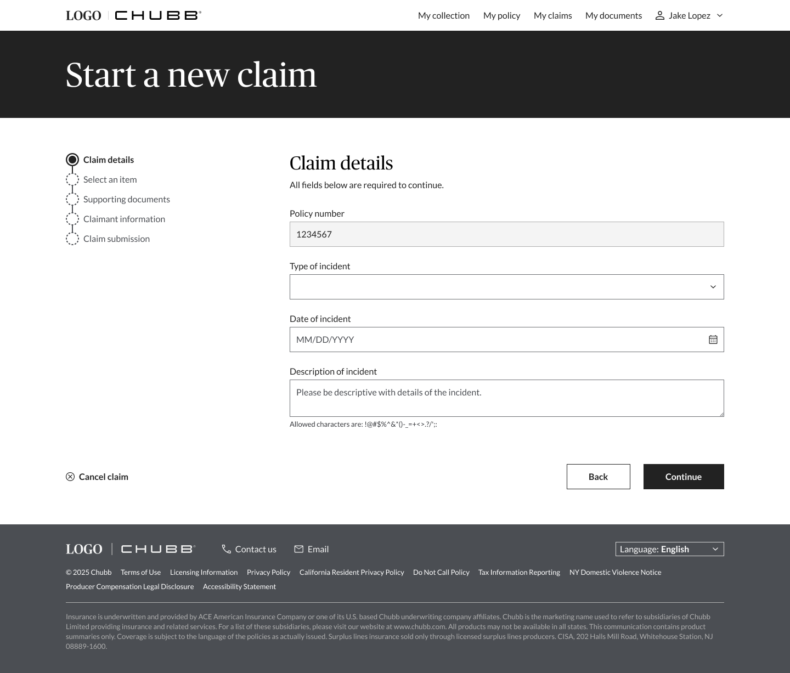
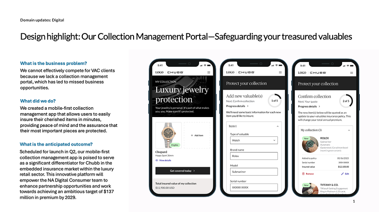
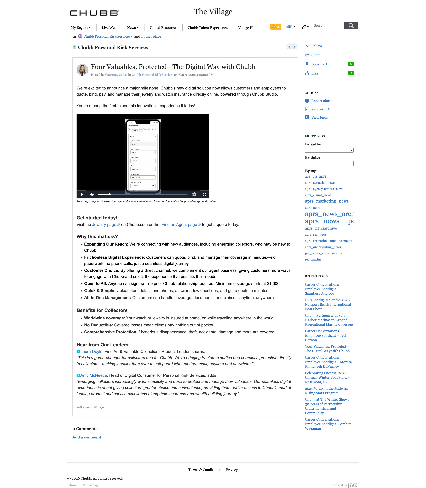

01. Context & Challenge
Collectors had valuable things to protect. And no digital way to do it.
Chubb's Valuable Articles Coverage, which includes jewelry, watches, fine art, and collectibles, had no digital presence for customers who wanted to manage their own coverage. If you wanted to quote, bind, pay, or update a policy, you called an agent. That was the only path.
For Chubb, this wasn't just a UX gap. It was a competitive one. Without a collection management portal, the business couldn't effectively reach a growing segment: emerging collectors who expect a digital-first experience and don't need a phone call to feel confident about a purchase. There was a larger ambition in play too: a $137 million premium target by 2029, with this platform as a key lever to reach it.
Nothing existed before this. No legacy portal to migrate, no prior design to reference. The brief was to build it from scratch.
02. My Role & Process
From the first scenario to the final spec.
This was my first project after moving from Chubb's multi-disciplinary product teams, Cyber and Auto, into the newly formed Proposition & Partnerships pillar of the design system team. The scope was end-to-end: design every touchpoint of the Valuable Articles portal, from the entry point and authentication flow through the collection dashboard, quoting, payment, and claims.
I started by building a comprehensive scenario booklet, a visual inventory of every user path across the platform before a single screen was finalized. New business happy paths, endorsed items, verified and unverified purchases, denied coverage, document states, mobile progress flows. Mapping all of it upfront meant edge cases surfaced in documentation, not in legal review.

Legal review followed in multiple rounds, working through every flow: point-of-sale, verified and unverified purchase, endorsements over threshold, the claims flow, the dashboard, and denied coverage states. Each round required coordinated updates across an interconnected system of screens, not isolated fixes.

Dev handoff was the final design phase. I built a responsive specification document covering five breakpoints from XL through mobile, so engineers had a precise layout reference for how every screen adapts. The entry point was designed to serve both new and returning collectors, with a direct path to coverage surfaced immediately.

The authentication flow was designed to feel frictionless at the moment it matters most, when a collector is ready to act. A split layout with editorial photography on the right keeps the experience feeling premium, not transactional.

From entry point to quote, the full flow was designed to move quickly. A collector can go from landing on the portal to a bound policy in minutes.
The claims experience required the same rigor as the quoting flow. I designed a five-step FNOL process covering Claim details, Select an item, Supporting documents, Claimant information, and Claim submission. The structure was built to guide collectors through an inherently stressful moment with clear progress and minimal friction.

03. Constraints & Organizational Context
The design work was the easier part.
A constrained budget shaped every decision, including not just what got built but what had to be defended and re-defended at each stage of the project.
The more unexpected constraint was the collaboration dynamic. A business analyst on the project had edit access to the Figma files and regularly made changes directly to the designs. On a project this complex, running multiple rounds of legal review across an interconnected screen system, unmanaged edits created real risk. I reframed the working relationship, treating her as an active design collaborator with a defined role rather than working around her. It required more active oversight than I'd anticipated, but it also pushed the documentation to be more explicit and rigorous than it might have been otherwise.
Coming into a new pillar of the team also meant there was no established process for this type of work at Chubb. Consumer-facing, direct-to-customer, and greenfield, it sat outside the B2B agent experience the broader team had done before. I was building the approach as the project moved forward, which is a different kind of challenge than executing within a known playbook.
04. Outcomes & Impact
Collectors can now do it themselves. That's the whole point.
The platform is live. Chubb customers can now quote, bind, pay, and manage their Valuable Articles coverage entirely online with no agent call required. The portal is open to anyone, with no prior Chubb relationship needed, coverage starting at $1,000, and a seamless path from first visit to bound policy.

What launched is a mobile-first experience that brings collectors into the Chubb ecosystem through something that feels personal to them. It is not an insurance form. It is a home for the things they care about most. The platform is positioned as a differentiator for Chubb in the embedded insurance market within the luxury retail sector.
Targeting $137 million in premium by 2029.
When the platform launched in March 2026, it was featured in Chubb's internal news.

You can see it live at chubb.com/valuables.